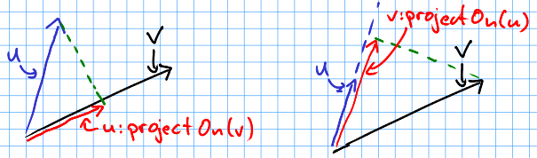

hump - Helper Utilities for a Multitude of Problems¶
hump is a set of lightweight helpers for the awesome LÖVE game framework. It will help to get you over the initial hump when starting to build a new game.
hump differs from many other libraries in that every component is independent of the remaining ones. The footprint is very small, so the library should fit nicely into your projects.
Read on¶
hump.gamestate¶
Gamestate = require "hump.gamestate"
A gamestate encapsulates independent data an behaviour in a single table.
A typical game could consist of a menu-state, a level-state and a game-over-state.
Example:
local menu = {} -- previously: Gamestate.new()
local game = {}
function menu:draw()
love.graphics.print("Press Enter to continue", 10, 10)
end
function menu:keyreleased(key, code)
if key == 'return' then
Gamestate.switch(game)
end
end
function game:enter()
Entities.clear()
-- setup entities here
end
function game:update(dt)
Entities.update(dt)
end
function game:draw()
Entities.draw()
end
function love.load()
Gamestate.registerEvents()
Gamestate.switch(menu)
end
Gamestate Callbacks¶
A gamestate can define all callbacks that LÖVE defines. In addition, there are callbacks for initalizing, entering and leaving a state:
init()- Called once, and only once, before entering the state the first time. See
Gamestate.switch(). enter(previous, ...)- Called every time when entering the state. See
Gamestate.switch(). leave()- Called when leaving a state. See
Gamestate.switch()andGamestate.pop(). resume()- Called when re-entering a state by
Gamestate.pop()-ing another state. update()- Update the game state. Called every frame.
draw()- Draw on the screen. Called every frame.
focus()- Called if the window gets or looses focus.
keypressed()- Triggered when a key is pressed.
keyreleased()- Triggered when a key is released.
mousepressed()- Triggered when a mouse button is pressed.
mousereleased()- Triggered when a mouse button is released.
joystickpressed()- Triggered when a joystick button is pressed.
joystickreleased()- Triggered when a joystick button is released.
quit()- Called on quitting the game. Only called on the active gamestate.
When using Gamestate.registerEvents(), all these callbacks will be called by the
corresponding LÖVE callbacks and receive receive the same arguments (e.g.
state:update(dt) will be called by love.update(dt)).
Example:
menu = {} -- previously: Gamestate.new()
function menu:init()
self.background = love.graphics.newImage('bg.jpg')
Buttons.initialize()
end
function menu:enter(previous) -- runs every time the state is entered
Buttons.setActive(Buttons.start)
end
function menu:update(dt) -- runs every frame
Buttons.update(dt)
end
function menu:draw()
love.graphics.draw(self.background, 0, 0)
Buttons.draw()
end
function menu:keyreleased(key)
if key == 'up' then
Buttons.selectPrevious()
elseif key == 'down' then
Buttons.selectNext()
elseif
Buttons.active:onClick()
end
end
function menu:mousereleased(x,y, mouse_btn)
local button = Buttons.hovered(x,y)
if button then
Button.select(button)
if mouse_btn == 'l' then
button:onClick()
end
end
end
Function Reference¶
-
Gamestate.new()¶ Returns: An empty table.
Deprecated: Use the table constructor instead (see example)
Declare a new gamestate (just an empty table). A gamestate can define several callbacks.
Example:
menu = {}
-- deprecated method:
menu = Gamestate.new()
-
Gamestate.switch(to, ...)¶ Arguments: - to (Gamestate) – Target gamestate.
- ... (mixed) – Additional arguments to pass to
to:enter(current, ...).
Returns: The results of
to:enter(current, ...).
Switch to a gamestate, with any additional arguments passed to the new state.
Switching a gamestate will call the leave() callback on the current
gamestate, replace the current gamestate with to, call the init() function
if, and only if, the state was not yet inialized and finally call
enter(old_state, ...) on the new gamestate.
Note
Processing of callbacks is suspended until update() is called on the new
gamestate, but the function calling Gamestate.switch() can still continue - it is
your job to make sure this is handled correctly. See also the examples below.
Examples:
Gamestate.switch(game, level_two)
-- stop execution of the current state by using return
if player.has_died then
return Gamestate.switch(game, level_two)
end
-- this will not be called when the state is switched
player:update()
-
Gamestate.Gamestate.current()¶ Returns: The active gamestate.
Returns the currently activated gamestate.
Example:
function love.keypressed(key)
if Gamestate.current() ~= menu and key == 'p' then
Gamestate.push(pause)
end
end
-
Gamestate.push(to, ...)¶ Arguments: - to (Gamestate) – Target gamestate.
- ... (mixed) – Additional arguments to pass to
to:enter(current, ...).
Returns: The results of
to:enter(current, ...).
Pushes the to on top of the state stack, i.e. makes it the active state.
Semantics are the same as switch(to, ...), except that leave() is not
called on the previously active state.
Useful for pause screens, menus, etc.
Note
Processing of callbacks is suspended until update() is called on the
new gamestate, but the function calling GS.push() can still continue -
it is your job to make sure this is handled correctly. See also the
example below.
Example:
-- pause gamestate
Pause = Gamestate.new()
function Pause:enter(from)
self.from = from -- record previous state
end
function Pause:draw()
local W, H = love.graphics.getWidth(), love.graphics.getHeight()
-- draw previous screen
self.from:draw()
-- overlay with pause message
love.graphics.setColor(0,0,0, 100)
love.graphics.rectangle('fill', 0,0, W,H)
love.graphics.setColor(255,255,255)
love.graphics.printf('PAUSE', 0, H/2, W, 'center')
end
-- [...]
function love.keypressed(key)
if Gamestate.current() ~= menu and key == 'p' then
return Gamestate.push(pause)
end
end
-
Gamestate.pop(...)¶ Returns: The results of new_state:resume(...).
Calls leave() on the current state and then removes it from the stack, making
the state below the current state and calls resume(...) on the activated state.
Does not call enter() on the activated state.
Note
Processing of callbacks is suspended until update() is called on the
new gamestate, but the function calling GS.pop() can still continue -
it is your job to make sure this is handled correctly. See also the
example below.
Example:
-- extending the example of Gamestate.push() above
function Pause:keypressed(key)
if key == 'p' then
return Gamestate.pop() -- return to previous state
end
end
-
Gamestate.<callback>(...)¶ Arguments: - ... (mixed) – Arguments to pass to the corresponding function.
Returns: The result of the callback function.
Calls a function on the current gamestate. Can be any function, but is intended
to be one of the Gamestate Callbacks. Mostly useful when not using
Gamestate.registerEvents().
Example:
function love.draw()
Gamestate.draw() -- <callback> is `draw'
end
function love.update(dt)
Gamestate.update(dt) -- pass dt to currentState:update(dt)
end
function love.keypressed(key, code)
Gamestate.keypressed(key, code) -- pass multiple arguments
end
-
Gamestate.registerEvents([callbacks])¶ Arguments: - callbacks (table) – Names of the callbacks to register. If omitted, register all love callbacks (optional).
Overwrite love callbacks to call Gamestate.update(), Gamestate.draw(),
etc. automatically. love callbacks (e.g. love.update()) are still
invoked as usual.
This is by done by overwriting the love callbacks, e.g.:
local old_update = love.update
function love.update(dt)
old_update(dt)
return Gamestate.current:update(dt)
end
Note
Only works when called in love.load() or any other function that is executed after the whole file is loaded.
Examples:
function love.load()
Gamestate.registerEvents()
Gamestate.switch(menu)
end
-- love callback will still be invoked
function love.update(dt)
Timer.update(dt)
-- no need for Gamestate.update(dt)
end
function love.load()
-- only register draw, update and quit
Gamestate.registerEvents{'draw', 'update', 'quit'}
Gamestate.switch(menu)
end
hump.timer¶
Timer = require "hump.timer"
hump.timer offers a simple interface to schedule the execution of functions. It is possible to run functions after and for some amount of time. For example, a timer could be set to move critters every 5 seconds or to make the player invincible for a short amount of time.
In addition to that, hump.timer offers various tweening functions that make it
easier to produce juicy games.
Example:
function love.keypressed(key)
if key == ' ' then
Timer.after(1, function() print("Hello, world!") end)
end
end
function love.update(dt)
Timer.update(dt)
end
Function Reference¶
-
Timer.new()¶ Returns: A timer instance.
Creates a new timer instance that is independent of the global timer: It will manage it’s own list of scheduled functions and does not in any way affect the the global timer. Likewise, the global timer does not affect timer instances.
Note
If you don’t need multiple independent schedulers, you can use the global/default timer (see examples).
Note
Unlike the default timer, timer instances use the colon-syntax, i.e.,
you need to call instance:after(1, foo) instead of Timer.after(1,
foo).
Example:
menuTimer = Timer.new()
-
Timer.after(delay, func)¶ Arguments: - delay (number) – Number of seconds the function will be delayed.
- func (function) – The function to be delayed.
Returns: The timer handle. See also
Timer.cancel().
Schedule a function. The function will be executed after delay seconds have
elapsed, given that update(dt) is called every frame.
Note
There is no guarantee that the delay will not be exceeded, it is only guaranteed that the function will not be executed before the delay has passed.
func will receive itself as only parameter. This is useful to implement
periodic behavior (see the example).
Examples:
-- grant the player 5 seconds of immortality
player.isInvincible = true
Timer.after(5, function() player.isInvincible = false end)
-- print "foo" every second. See also every()
Timer.after(1, function(func) print("foo") Timer.after(1, func) end)
--Using a timer instance:
menuTimer:after(1, finishAnimation)
-
Timer.script(func)¶ Arguments: - func (function) – Script to execute.
Execute a function that can be paused without causing the rest of the program to
be suspended. func will receive a function - wait - to do interrupt the
script (but not the whole program) as only argument. The function prototype of
wait is: wait(delay).
Examples:
Timer.script(function(wait)
print("Now")
wait(1)
print("After one second")
wait(1)
print("Bye!")
end)
-- useful for splash screens
Timer.script(function(wait)
Timer.tween(0.5, splash.pos, {x = 300}, 'in-out-quad')
wait(5) -- show the splash for 5 seconds
Timer.tween(0.5, slpash.pos, {x = 800}, 'in-out-quad')
end)
-- repeat something with a varying delay
Timer.script(function(wait)
while true do
spawn_ship()
wait(1 / (1-production_speed))
end
end)
-- jumping with timer.script
self.timers:script(function(wait)
local w = 1/12
self.jumping = true
Timer.tween(w*2, self, {z = -8}, "out-cubic", function()
Timer.tween(w*2, self, {z = 0},"in-cubic")
end)
self.quad = self.quads.jump[1]
wait(w)
self.quad = self.quads.jump[2]
wait(w)
self.quad = self.quads.jump[3]
wait(w)
self.quad = self.quads.jump[4]
wait(w)
self.jumping = false
self.z = 0
end)
-
Timer.every(delay, func[, count])¶ Arguments: - delay (number) – Number of seconds between two consecutive function calls.
- func (function) – The function to be called periodically.
- count (number) – Number of times the function is to be called (optional).
Returns: The timer handle. See also
Timer.cancel().
Add a function that will be called count times every delay seconds.
If count is omitted, the function will be called until it returns false
or Timer.cancel() or Timer.clear() is called on the timer instance.
Example:
-- toggle light on and off every second
Timer.every(1, function() lamp:toggleLight() end)
-- launch 5 fighters in quick succession (using a timer instance)
mothership_timer:every(0.3, function() self:launchFighter() end, 5)
-- flicker player's image as long as he is invincible
Timer.every(0.1, function()
player:flipImage()
return player.isInvincible
end)
-
Timer.during(delay, func[, after])¶ Arguments: - delay (number) – Number of seconds the func will be called.
- func (function) – The function to be called on
update(dt). - after (function) – A function to be called after delay seconds (optional).
Returns: The timer handle. See also
Timer.cancel().
Run func(dt) for the next delay seconds. The function is called every
time update(dt) is called. Optionally run after() once delay
seconds have passed.
after() will receive itself as only parameter.
Note
You should not add new timers in func(dt), as this can lead to random
crashes.
Examples:
-- play an animation for 5 seconds
Timer.during(5, function(dt) animation:update(dt) end)
-- shake the camera for one second
local orig_x, orig_y = camera:pos()
Timer.during(1, function()
camera:lookAt(orig_x + math.random(-2,2), orig_y + math.random(-2,2))
end, function()
-- reset camera position
camera:lookAt(orig_x, orig_y)
end)
player.isInvincible = true
-- flash player for 3 seconds
local t = 0
player.timer:during(3, function(dt)
t = t + dt
player.visible = (t % .2) < .1
end, function()
-- make sure the player is visible after three seconds
player.visible = true
player.isInvincible = false
end)
-
Timer.cancel(handle)¶ Arguments: - handle (table) – The function to be canceled.
Prevent a timer from being executed in the future.
Examples:
function tick()
print('tick... tock...')
end
handle = Timer.every(1, tick)
-- later
Timer.cancel(handle) -- NOT: Timer.cancel(tick)
-- using a timer instance
function tick()
print('tick... tock...')
end
handle = menuTimer:every(1, tick)
-- later
menuTimer:cancel(handle)
-
Timer.clear()¶
Remove all timed and periodic functions. Functions that have not yet been executed will discarded.
Examples:
Timer.clear()
menuTimer:clear()
-
Timer.update(dt)¶ Arguments: - dt (number) – Time that has passed since the last
update().
- dt (number) – Time that has passed since the last
Update timers and execute functions if the deadline is reached. Call in
love.update(dt).
Examples:
function love.update(dt)
do_stuff()
Timer.update(dt)
end
-- using hump.gamestate and a timer instance
function menuState:update(dt)
self.timers:update(dt)
end
-
Timer.tween(duration, subject, target, method, after, ...)¶ Arguments: - duration (number) – Duration of the tween.
- subject (table) – Object to be tweened.
- target (table) – Target values.
- method (string) – Tweening method, defaults to ‘linear’ (see here, optional).
- after (function) – Function to execute after the tween has finished (optiona).
- ... (mixed) – Additional arguments to the tweening function.
Returns: A timer handle.
Tweening (short for in-betweening) is the process that happens between two defined states. For example, a tween can be used to gradually fade out a graphic or move a text message to the center of the screen. For more information why tweening should be important to you, check out this great talk on juicy games.
hump.timer offers two interfaces for tweening: the low-level
Timer.during() and the higher level interface Timer.tween().
To see which tweening methods hump offers, see below.
Examples:
function love.load()
color = {0, 0, 0}
Timer.tween(10, color, {255, 255, 255}, 'in-out-quad')
end
function love.update(dt)
Timer.update(dt)
end
function love.draw()
love.graphics.setBackgroundColor(color)
end
function love.load()
circle = {rad = 10, pos = {x = 400, y = 300}}
-- multiple tweens can work on the same subject
-- and nested values can be tweened, too
Timer.tween(5, circle, {rad = 50}, 'in-out-quad')
Timer.tween(2, circle, {pos = {y = 550}}, 'out-bounce')
end
function love.update(dt)
Timer.update(dt)
end
function love.draw()
love.graphics.circle('fill', circle.pos.x, circle.pos.y, circle.rad)
end
function love.load()
-- repeated tweening
circle = {rad = 10, x = 100, y = 100}
local grow, shrink, move_down, move_up
grow = function()
Timer.tween(1, circle, {rad = 50}, 'in-out-quad', shrink)
end
shrink = function()
Timer.tween(2, circle, {rad = 10}, 'in-out-quad', grow)
end
move_down = function()
Timer.tween(3, circle, {x = 700, y = 500}, 'bounce', move_up)
end
move_up = function()
Timer.tween(5, circle, {x = 200, y = 200}, 'out-elastic', move_down)
end
grow()
move_down()
end
function love.update(dt)
Timer.update(dt)
end
function love.draw()
love.graphics.circle('fill', circle.x, circle.y, circle.rad)
end
Tweening methods¶
At the core of tweening lie interpolation methods. These methods define how the output should look depending on how much time has passed. For example, consider the following tween:
-- now: player.x = 0, player.y = 0
Timer.tween(2, player, {x = 2})
Timer.tween(4, player, {y = 8})
At the beginning of the tweens (no time passed), the interpolation method would
place the player at x = 0, y = 0. After one second, the player should be at
x = 1, y = 2, and after two seconds the output is x = 2, y = 4.
The actual duration of and time since starting the tween is not important, only the fraction of the two. Similarly, the starting value and output are not important to the interpolation method, since it can be calculated from the start and end point. Thus an interpolation method can be fully characterized by a function that takes a number between 0 and 1 and returns a number that defines the output (usually also between 0 and 1). The interpolation function must hold that the output is 0 for input 0 and 1 for input 1.
hump predefines several commonly used interpolation methods, which are generalized versions of Robert Penner’s easing functions. Those are:
'linear',
'quad',
'cubic',
'quart',
'quint',
'sine',
'expo',
'circ',
'back',
'bounce', and
'elastic'.
It’s hard to understand how these functions behave by staring at a graph, so below are some animation examples. You can change the type of the tween by changing the selections.
Note that while the animations above show tweening of shapes, other attributes (color, opacity, volume of a sound, ...) can be changed as well.
Custom interpolators¶
You can add custom interpolation methods by adding them to the tween table:
Timer.tween.sqrt = function(t) return math.sqrt(t) end
-- or just Timer.tween.sqrt = math.sqrt
Access the your method like you would the predefined ones. You can even use the modyfing prefixes:
Timer.tween(5, 'in-out-sqrt', circle, {radius = 50})
You can also invert and chain functions:
outsqrt = Timer.tween.out(math.sqrt)
inoutsqrt = Timer.tween.chain(math.sqrt, outsqrt)
hump.vector¶
vector = require "hump.vector"
A handy 2D vector class providing most of the things you do with vectors.
You can access the individual coordinates by vec.x and vec.y.
Note
The vectors are stored as tables. Most operations create new vectors and thus new tables, which may put the garbage collector under stress. If you experience slowdowns that are caused by hump.vector, try the table-less version hump.vector-light.
Example:
function player:update(dt)
local delta = vector(0,0)
if love.keyboard.isDown('left') then
delta.x = -1
elseif love.keyboard.isDown('right') then
delta.x = 1
end
if love.keyboard.isDown('up') then
delta.y = -1
elseif love.keyboard.isDown('down') then
delta.y = 1
end
delta:normalizeInplace()
player.velocity = player.velocity + delta * player.acceleration * dt
if player.velocity:len() > player.max_velocity then
player.velocity = player.velocity:normalized() * player.max_velocity
end
player.position = player.position + player.velocity * dt
end
Vector arithmetic¶
hump provides vector arithmetic by implement the corresponding metamethods
(__add, __mul, etc.). Here are the semantics:
vector + vector = vector- Component wise sum: \((a,b) + (x,y) = (a+x, b+y)\)
vector - vector = vector- Component wise difference: \((a,b) - (x,y) = (a-x, b-y)\)
vector * vector = number- Dot product: \((a,b) \cdot (x,y) = a\cdot x + b\cdot y\)
number * vector = vector- Scalar multiplication/scaling: \((a,b) \cdot s = (s\cdot a, s\cdot b)\)
vector * number = vector- Scalar multiplication/scaling: \(s \cdot (x,y) = (s\cdot x, s\cdot y)\)
vector / number = vector- Scalar multiplication/scaling: \((a,b) / s = (a/s, b/s)\).
Common relations are also defined:
a == b- Same as
a.x == b.x and a.y == b.y. a <= b- Same as
a.x <= b.x and a.y <= b.y. a < b- Lexicographical order:
a.x < b.x or (a.x == b.x and a.y < b.y).
Example:
-- acceleration, player.velocity and player.position are vectors
acceleration = vector(0,-9)
player.velocity = player.velocity + acceleration * dt
player.position = player.position + player.velocity * dt
Function Reference¶
-
vector.new(x, y)¶ Arguments: - x,y (numbers) – Coordinates.
Returns: The vector.
Create a new vector.
Examples:
a = vector.new(10,10)
-- as a shortcut, you can call the module like a function:
vector = require "hump.vector"
a = vector(10,10)
-
vector.isvector(v)¶ Arguments: - v (mixed) – The variable to test.
Returns: trueifvis a vector,falseotherwise.
Test whether a variable is a vector.
Example:
if not vector.isvector(v) then
v = vector(v,0)
end
-
vector:clone()¶ Returns: Copy of the vector.
Copy a vector. Assigning a vector to a variable will create a reference, so when modifying the vector referenced by the new variable would also change the old one:
a = vector(1,1) -- create vector
b = a -- b references a
c = a:clone() -- c is a copy of a
b.x = 0 -- changes a,b and c
print(a,b,c) -- prints '(1,0), (1,0), (1,1)'
Example:
copy = original:clone()
-
vector:unpack()¶ Returns: The coordinates x,y.
Extract coordinates.
Examples:
x,y = pos:unpack()
love.graphics.draw(self.image, self.pos:unpack())
-
vector:permul(other)¶ Arguments: - other (vector) – The second source vector.
Returns: Vector whose components are products of the source vectors.
Multiplies vectors coordinate wise, i.e. result = vector(a.x * b.x, a.y *
b.y).
Does not change either argument vectors, but creates a new one.
Example:
-- scale with different magnitudes
scaled = original:permul(vector(1,1.5))
-
vector:len()¶ Returns: Length of the vector.
Get length of the vector, i.e. math.sqrt(vec.x * vec.x + vec.y * vec.y).
Example:
distance = (a - b):len()
-
vector:len2()¶ Returns: Squared length of the vector.
Get squared length of the vector, i.e. vec.x * vec.x + vec.y * vec.y.
Example:
-- get closest vertex to a given vector
closest, dsq = vertices[1], (pos - vertices[1]):len2()
for i = 2,#vertices do
local temp = (pos - vertices[i]):len2()
if temp < dsq then
closest, dsq = vertices[i], temp
end
end
-
vector:dist(other)¶ Arguments: - other (vector) – Other vector to measure the distance to.
Returns: The distance of the vectors.
Get distance of two vectors. The same as (a - b):len().
Example:
-- get closest vertex to a given vector
-- slightly slower than the example using len2()
closest, dist = vertices[1], pos:dist(vertices[1])
for i = 2,#vertices do
local temp = pos:dist(vertices[i])
if temp < dist then
closest, dist = vertices[i], temp
end
end
-
vector:dist2(other)¶ Arguments: - other (vector) – Other vector to measure the distance to.
Returns: The squared distance of the vectors.
Get squared distance of two vectors. The same as (a - b):len2().
Example:
-- get closest vertex to a given vector
-- slightly faster than the example using len2()
closest, dsq = vertices[1], pos:dist2(vertices[1])
for i = 2,#vertices do
local temp = pos:dist2(vertices[i])
if temp < dsq then
closest, dsq = vertices[i], temp
end
end
-
vector:normalized()¶ Returns: Vector with same direction as the input vector, but length 1.
Get normalized vector: a vector with the same direction as the input vector, but with length 1.
Does not change the input vector, but creates a new vector.
Example:
direction = velocity:normalized()
-
vector:normalizeInplace()¶ Returns: Itself – the normalized vector
Normalize a vector, i.e. make the vector to have length 1. Great to use on intermediate results.
Warning
This modifies the vector. If in doubt, use vector:normalized().
Example:
normal = (b - a):perpendicular():normalizeInplace()
-
vector:rotated(angle)¶ Arguments: - angle (number) – Rotation angle in radians.
Returns: The rotated vector
Get a vector with same length, but rotated by angle:
Does not change the input vector, but creates a new vector.
Example:
-- approximate a circle
circle = {}
for i = 1,30 do
local phi = 2 * math.pi * i / 30
circle[#circle+1] = vector(0,1):rotated(phi)
end
-
vector:rotateInplace(angle)¶ Arguments: - angle (number) – Rotation angle in radians.
Returns: Itself – the rotated vector
Rotate a vector in-place. Great to use on intermediate results.
Warning
Yhis modifies the vector. If in doubt, use vector:rotated().
Example:
-- ongoing rotation
spawner.direction:rotateInplace(dt)
-
vector:perpendicular()¶ Returns: A vector perpendicular to the input vector
Quick rotation by 90°. Creates a new vector. The same (but faster) as
vec:rotate(math.pi/2):
Example:
normal = (b - a):perpendicular():normalizeInplace()
-
vector:projectOn(v)¶ Arguments: - v (vector) – The vector to project on.
Returns: vectorThe projected vector.
Project vector onto another vector:
Example:
velocity_component = velocity:projectOn(axis)
-
vector:mirrorOn(v)¶ Arguments: - v (vector) – The vector to mirror on.
Returns: The mirrored vector.
Mirrors vector on the axis defined by the other vector:
Example:
deflected_velocity = ball.velocity:mirrorOn(surface_normal)
-
vector:cross(other)¶ Arguments: - other (vector) – Vector to compute the cross product with.
Returns: numberCross product of both vectors.
Get cross product of two vectors. Equals the area of the parallelogram spanned by both vectors.
Example:
parallelogram_area = a:cross(b)
-
vector:angleTo(other)¶ Arguments: - other (vector) – Vector to measure the angle to (optional).
Returns: Angle in radians.
Measures the angle between two vectors. If other is omitted it defaults
to the vector (0,0), i.e. the function returns the angle to the coordinate
system.
Example:
lean = self.upvector:angleTo(vector(0,1))
if lean > .1 then self:fallOver() end
-
vector:trimmed(max_length)¶ Arguments: - max_length (number) – Maximum allowed length of the vector.
Returns: A trimmed vector.
Trim the vector to max_length, i.e. return a vector that points in the same
direction as the source vector, but has a magnitude smaller or equal to
max_length.
Does not change the input vector, but creates a new vector.
Example:
ship.velocity = ship.force * ship.mass * dt
ship.velocity = ship.velocity:trimmed(299792458)
-
vector:trimInplace(max_length)¶ Arguments: - max_length (number) – Maximum allowed length of the vector.
Returns: Itself – the trimmed vector.
Trim the vector to max_length, i.e. return a vector that points in the same
direction as the source vector, but has a magnitude smaller or equal to
max_length.
Warning
Yhis modifies the vector. If in doubt, use vector:trimmed().
Example:
ship.velocity = (ship.velocity + ship.force * ship.mass * dt):trimInplace(299792458)
hump.vector-light¶
vector = require "hump.vector-light"
An table-free version of hump.vector. Instead of a vector type,
hump.vector-light provides functions that operate on numbers.
Note
Using this module instead of hump.vector may result in faster code, but does so at the expense of speed of development and code readability. Unless you are absolutely sure that your code is significantly slowed down by hump.vector, I recommend using it instead.
Example:
function player:update(dt)
local dx,dy = 0,0
if love.keyboard.isDown('left') then
dx = -1
elseif love.keyboard.isDown('right') then
dx = 1
end
if love.keyboard.isDown('up') then
dy = -1
elseif love.keyboard.isDown('down') then
dy = 1
end
dx,dy = vector.normalize(dx, dy)
player.velx, player.vely = vector.add(player.velx, player.vely,
vector.mul(dy, dx, dy))
if vector.len(player.velx, player.vely) > player.max_velocity then
player.velx, player.vely = vector.mul(player.max_velocity,
vector.normalize(player.velx, player.vely)
end
player.x = player.x + dt * player.velx
player.y = player.y + dt * player.vely
end
Function Reference¶
-
vector.str(x, y)¶ Arguments: - x,y (numbers) – The vector.
Returns: The string representation.
Produce a human-readable string of the form (x,y).
Useful for debugging.
Example:
print(vector.str(love.mouse.getPosition()))
-
vector.mul(s, x, y)¶ Arguments: - s (number) – A scalar.
- x,y (numbers) – A vector.
Returns: x*s, y*s.
Computes x*s,y*s. The order of arguments is chosen so that it’s possible to
chain operations (see example).
Example:
velx,vely = vec.mul(dt, vec.add(velx,vely, accx,accy))
-
vector.div(s, x, y)¶ Arguments: - s (number) – A scalar.
- x,y (numbers) – A vector.
Returns: x/s, y/s.
Computes x/s,y/s. The order of arguments is chosen so that it’s possible to
chain operations (see example).
Example:
x,y = vec.div(self.zoom, x-w/2, y-h/2)
-
vector.add(x1, y1, x2, y2)¶ Arguments: - x1,y1 (numbers) – First vector.
- x2,y2 (numbers) – Second vector.
Returns: x1+x2, x1+x2.
Computes the sum \((x1+x2, y1+y2)\)`` of two vectors. Meant to be used in
conjunction with other functions like vector.mul().
Example:
player.x,player.y = vector.add(player.x,player.y, vector.mul(dt, dx,dy))
-
vector.sub(x1, y1, x2, y2)¶ Arguments: - x1,y1 (numbers) – First vector.
- x2,y2 (numbers) – Second vector.
Returns: x1-x2, x1-x2.
Computes the difference \((x1-x2, y1-y2)\) of two vectors. Meant to be used in
conjunction with other functions like vector.mul().
Example:
dx,dy = vector.sub(400,300, love.mouse.getPosition())
-
vector.permul(x1, y1, x2, y2)¶ Arguments: - x1,y1 (numbers) – First vector.
- x2,y2 (numbers) – Second vector.
Returns: x1*x2, y1*y2.
Component-wise multiplication, i.e.: x1*x2, y1*y2.
Example:
x,y = vector.permul(x,y, 1,1.5)
-
vector.dot(x1, y1, x2, y2)¶ Arguments: - x1,y1 (numbers) – First vector.
- x2,y2 (numbers) – Second vector.
Returns: x1*x2 + y1*y2.
Computes the dot product of two
vectors: x1*x2 + y1*y2.
Example:
cosphi = vector.dot(rx,ry, vx,vy)
-
vector.cross(x1, y1, x2, y2)¶ Arguments: - x1,y1 (numbers) – First vector.
- x2,y2 (numbers) – Second vector.
Returns: x1*y2 - y1*x2.
Computes the cross product of
two vectors: x1*y2 - y1*x2.
Example:
parallelogram_area = vector.cross(ax,ay, bx,by)
-
vector.vector.det(x1, y1, x2, y2)¶ Arguments: - x1,y1 (numbers) – First vector.
- x2,y2 (numbers) – Second vector.
Returns: x1*y2 - y1*x2.
Alias to vector.cross().
Example:
parallelogram_area = vector.det(ax,ay, bx,by)
-
vector.eq(x1, y1, x2, y2)¶ Arguments: - x1,y1 (numbers) – First vector.
- x2,y2 (numbers) – Second vector.
Returns: x1 == x2 and y1 == y2
Test for equality.
Example:
if vector.eq(x1,y1, x2,y2) then be.happy() end
-
vector.le(x1, y1, x2, y2)¶ Arguments: - x1,y1 (numbers) – First vector.
- x2,y2 (numbers) – Second vector.
Returns: x1 <= x2 and y1 <= y2.
Test for partial lexicographical order, <=.
Example:
if vector.le(x1,y1, x2,y2) then be.happy() end
-
vector.lt(x1, y1, x2, y2)¶ Arguments: - x1,y1 (numbers) – First vector.
- x2,y2 (numbers) – Second vector.
Returns: x1 < x2 or (x1 == x2) and y1 <= y2.
Test for strict lexicographical order, <.
Example:
if vector.lt(x1,y1, x2,y2) then be.happy() end
-
vector.len(x, y)¶ Arguments: - x,y (numbers) – The vector.
Returns: Length of the vector.
Get length of a vector, i.e. math.sqrt(x*x + y*y).
Example:
distance = vector.len(love.mouse.getPosition())
-
vector.len2(x, y)¶ Arguments: - x,y (numbers) – The vector.
Returns: Squared length of the vector.
Get squared length of a vector, i.e. x*x + y*y.
Example:
-- get closest vertex to a given vector
closest, dsq = vertices[1], vector.len2(px-vertices[1].x, py-vertices[1].y)
for i = 2,#vertices do
local temp = vector.len2(px-vertices[i].x, py-vertices[i].y)
if temp < dsq then
closest, dsq = vertices[i], temp
end
end
-
vector.dist(x1, y1, x2, y2)¶ Arguments: - x1,y1 (numbers) – First vector.
- x2,y2 (numbers) – Second vector.
Returns: The distance of the points.
Get distance of two points. The same as vector.len(x1-x2, y1-y2).
Example:
-- get closest vertex to a given vector
-- slightly slower than the example using len2()
closest, dist = vertices[1], vector.dist(px,py, vertices[1].x,vertices[1].y)
for i = 2,#vertices do
local temp = vector.dist(px,py, vertices[i].x,vertices[i].y)
if temp < dist then
closest, dist = vertices[i], temp
end
end
-
vector.dist2(x1, y1, x2, y2)¶ Arguments: - x1,y1 (numbers) – First vector.
- x2,y2 (numbers) – Second vector.
Returns: The squared distance of two points.
Get squared distance of two points. The same as vector.len2(x1-x2, y1-y2).
Example:
-- get closest vertex to a given vector
closest, dsq = vertices[1], vector.dist2(px,py, vertices[1].x,vertices[1].y)
for i = 2,#vertices do
local temp = vector.dist2(px,py, vertices[i].x,vertices[i].y)
if temp < dsq then
closest, dsq = vertices[i], temp
end
end
-
vector.normalize(x, y)¶ Arguments: - x,y (numbers) – The vector.
Returns: Vector with same direction as the input vector, but length 1.
Get normalized vector, i.e. a vector with the same direction as the input vector, but with length 1.
Example:
dx,dy = vector.normalize(vx,vy)
-
vector.rotate(phi, x, y)¶ Arguments: - phi (number) – Rotation angle in radians.
- x,y (numbers) – The vector.
Returns: The rotated vector
Get a rotated vector.
Example:
-- approximate a circle
circle = {}
for i = 1,30 do
local phi = 2 * math.pi * i / 30
circle[i*2-1], circle[i*2] = vector.rotate(phi, 0,1)
end
-
vector.perpendicular(x, y)¶ Arguments: - x,y (numbers) – The vector.
Returns: A vector perpendicular to the input vector
Quick rotation by 90°. The same (but faster) as vector.rotate(math.pi/2, x,y).
Example:
nx,ny = vector.normalize(vector.perpendicular(bx-ax, by-ay))
-
vector.project(x, y, u, v)¶ Arguments: - x,y (numbers) – The vector to project.
- u,v (numbers) – The vector to project onto.
Returns: The projected vector.
Project vector onto another vector.
Example:
vx_p,vy_p = vector.project(vx,vy, ax,ay)
-
vector.mirror(x, y, u, v)¶ Arguments: - x,y (numbers) – The vector to mirror.
- u,v (numbers) – The vector defining the axis.
Returns: The mirrored vector.
Mirrors vector on the axis defined by the other vector.
Example:
vx,vy = vector.mirror(vx,vy, surface.x,surface.y)
-
vector.angleTo(ox, y, u, v)¶ Arguments: - x,y (numbers) – Vector to measure the angle.
- u,v (optional) (numbers) – Reference vector.
Returns: Angle in radians.
Measures the angle between two vectors. u and v default to 0 if omitted,
i.e. the function returns the angle to the coordinate system.
Example:
lean = vector.angleTo(self.upx, self.upy, 0,1)
if lean > .1 then self:fallOver() end
-
vector.trim(max_length, x, y)¶ Arguments: - max_length (number) – Maximum allowed length of the vector.
- x,y (numbers) – Vector to trum.
Returns: The trimmed vector.
Trim the vector to max_length, i.e. return a vector that points in the same
direction as the source vector, but has a magnitude smaller or equal to
max_length.
Example:
vel_x, vel_y = vector.trim(299792458,
vector.add(vel_x, vel_y,
vector.mul(mass * dt, force_x, force_y)))
hump.class¶
Class = require "hump.class"
A small, fast class/prototype implementation with multiple inheritance.
Implements class commons.
Example:
Critter = Class{
init = function(self, pos, img)
self.pos = pos
self.img = img
end,
speed = 5
}
function Critter:update(dt, player)
-- see hump.vector
local dir = (player.pos - self.pos):normalize_inplace()
self.pos = self.pos + dir * Critter.speed * dt
end
function Critter:draw()
love.graphics.draw(self.img, self.pos.x, self.pos.y)
end
Function Reference¶
-
Class.new()¶
-
Class.new({init = constructor, __includes = parents, ...}) Arguments: - constructor (function) – Class constructor. Can be accessed with
theclass.init(object, ...). (optional) - or table of classes parents (class) – Classes to inherit from. Can either be a single class or a table of classes. (optional)
- ... (mixed) – Any other fields or methods common to all instances of this class. (optional)
Returns: The class.
- constructor (function) – Class constructor. Can be accessed with
Declare a new class.
init() will receive the new object instance as first argument. Any other
arguments will also be forwarded (see examples), i.e. init() has the
following signature:
function init(self, ...)
If you do not specify a constructor, an empty constructor will be used instead.
The name of the variable that holds the module can be used as a shortcut to
new() (see example).
Examples:
Class = require 'hump.class' -- `Class' is now a shortcut to new()
-- define a class class
Feline = Class{
init = function(self, size, weight)
self.size = size
self.weight = weight
end;
-- define a method
stats = function(self)
return string.format("size: %.02f, weight: %.02f", self.size, self.weight)
end;
}
-- create two objects
garfield = Feline(.7, 45)
felix = Feline(.8, 12)
print("Garfield: " .. garfield:stats(), "Felix: " .. felix:stats())
Class = require 'hump.class'
-- same as above, but with 'external' function definitions
Feline = Class{}
function Feline:init(size, weight)
self.size = size
self.weight = weight
end
function Feline:stats()
return string.format("size: %.02f, weight: %.02f", self.size, self.weight)
end
garfield = Feline(.7, 45)
print(Feline, garfield)
Class = require 'hump.class'
A = Class{
foo = function() print('foo') end
}
B = Class{
bar = function() print('bar') end
}
-- single inheritance
C = Class{__includes = A}
instance = C()
instance:foo() -- prints 'foo'
instance:bar() -- error: function not defined
-- multiple inheritance
D = Class{__includes = {A,B}}
instance = D()
instance:foo() -- prints 'foo'
instance:bar() -- prints 'bar'
-- class attributes are shared across instances
A = Class{ foo = 'foo' } -- foo is a class attribute/static member
one, two, three = A(), A(), A()
print(one.foo, two.foo, three.foo) --> prints 'foo foo foo'
one.foo = 'bar' -- overwrite/specify for instance `one' only
print(one.foo, two.foo, three.foo) --> prints 'bar foo foo'
A.foo = 'baz' -- overwrite for all instances without specification
print(one.foo, two.foo, three.foo) --> prints 'bar baz baz'
-
class.init(object, ...)¶ Arguments: - object (Object) – The object. Usually
self. - ... (mixed) – Arguments to pass to the constructor.
Returns: Whatever the parent class constructor returns.
- object (Object) – The object. Usually
Calls class constructor of a class on an object.
Derived classes should use this function their constructors to initialize the parent class(es) portions of the object.
Example:
Class = require 'hump.class'
Shape = Class{
init = function(self, area)
self.area = area
end;
__tostring = function(self)
return "area = " .. self.area
end
}
Rectangle = Class{__includes = Shape,
init = function(self, width, height)
Shape.init(self, width * height)
self.width = width
self.height = height
end;
__tostring = function(self)
local strs = {
"width = " .. self.width,
"height = " .. self.height,
Shape.__tostring(self)
}
return table.concat(strs, ", ")
end
}
print( Rectangle(2,4) ) -- prints 'width = 2, height = 4, area = 8'
-
Class:include(other)¶ Arguments: - other (tables) – Parent classes/mixins.
Returns: The class.
Inherit functions and variables of another class, but only if they are not already defined. This is done by (deeply) copying the functions and variables over to the subclass.
Note
class:include() doesn’t actually care if the arguments supplied are
hump classes. Just any table will work.
Note
You can use Class.include(a, b) to copy any fields from table a
to table b (see second example).
Examples:
Class = require 'hump.class'
Entity = Class{
init = function(self)
GameObjects.register(self)
end
}
Collidable = {
dispatch_collision = function(self, other, dx, dy)
if self.collision_handler[other.type])
return collision_handler[other.type](self, other, dx, dy)
end
return collision_handler["*"](self, other, dx, dy)
end,
collision_handler = {["*"] = function() end},
}
Spaceship = Class{
init = function(self)
self.type = "Spaceship"
-- ...
end
}
-- make Spaceship collidable
Spaceship:include(Collidable)
Spaceship.collision_handler["Spaceship"] = function(self, other, dx, dy)
-- ...
end
-- using Class.include()
Class = require 'hump.class'
a = {
foo = 'bar',
bar = {one = 1, two = 2, three = 3},
baz = function() print('baz') end,
}
b = {
foo = 'nothing to see here...'
}
Class.include(b, a) -- copy values from a to b
-- note that neither a nor b are hump classes!
print(a.foo, b.foo) -- prints 'bar nothing to see here...'
b.baz() -- prints 'baz'
b.bar.one = 10 -- changes only values in b
print(a.bar.one, b.bar.one) -- prints '1 10'
-
class:clone()¶ Returns: A deep copy of the class/table.
Create a clone/deep copy of the class.
Note
You can use Class.clone(a) to create a deep copy of any table (see
second example).
Examples:
Class = require 'hump.class'
point = Class{ x = 0, y = 0 }
a = point:clone()
a.x, a.y = 10, 10
print(a.x, a.y) --> prints '10 10'
b = point:clone()
print(b.x, b.y) --> prints '0 0'
c = a:clone()
print(c.x, c.y) --> prints '10 10'
-- using Class.clone() to copy tables
Class = require 'hump.class'
a = {
foo = 'bar',
bar = {one = 1, two = 2, three = 3},
baz = function() print('baz') end,
}
b = Class.clone(a)
b.baz() -- prints 'baz'
b.bar.one = 10
print(a.bar.one, b.bar.one) -- prints '1 10'
Caveats¶
Be careful when using metamethods like __add or __mul: If a subclass
inherits those methods from a superclass, but does not overwrite them, the
result of the operation may be of the type superclass. Consider the following:
Class = require 'hump.class'
A = Class{init = function(self, x) self.x = x end}
function A:__add(other) return A(self.x + other.x) end
function A:show() print("A:", self.x) end
B = Class{init = function(self, x, y) A.init(self, x) self.y = y end}
function B:show() print("B:", self.x, self.y) end
function B:foo() print("foo") end
B:include(A)
one, two = B(1,2), B(3,4)
result = one + two -- result will be of type A, *not* B!
result:show() -- prints "A: 4"
result:foo() -- error: method does not exist
Note that while you can define the __index metamethod of the class, this is
not a good idea: It will break the class mechanism. To add a custom __index
metamethod without breaking the class system, you have to use rawget(). But
beware that this won’t affect subclasses:
Class = require 'hump.class'
A = Class{}
function A:foo() print('bar') end
function A:__index(key)
print(key)
return rawget(A, key)
end
instance = A()
instance:foo() -- prints foo bar
B = Class{__includes = A}
instance = B()
instance:foo() -- prints only foo
hump.signal¶
Signal = require 'hump.signal'
A simple yet effective implementation of Signals and Slots, aka the Observer pattern: Functions can be dynamically bound to signals. When a signal is emitted, all registered functions will be invoked. Simple as that.
hump.signal makes things a little more interesing by allowing to emit all
signals that match a Lua string pattern.
Example:
-- in AI.lua
Signal.register('shoot', function(x,y, dx,dy)
-- for every critter in the path of the bullet:
-- try to avoid being hit
for critter in pairs(critters) do
if critter:intersectsRay(x,y, dx,dy) then
critter:setMoveDirection(-dy, dx)
end
end
end)
-- in sounds.lua
Signal.register('shoot', function()
Sounds.fire_bullet:play()
end)
-- in main.lua
function love.keypressed(key)
if key == ' ' then
local x,y = player.pos:unpack()
local dx,dy = player.direction:unpack()
Signal.emit('shoot', x,y, dx,dy)
end
end
Function Reference¶
-
Signal.new()¶ Returns: A new signal registry.
Creates a new signal registry that is independent of the default registry: It will manage it’s own list of signals and does not in any way affect the the global registry. Likewise, the global registry does not affect the instance.
Note
If you don’t need multiple independent registries, you can use the global/default registry (see examples).
Note
Unlike the default one, signal registry instances use the colon-syntax,
i.e., you need to call instance:emit('foo', 23) instead of
Signal.mit('foo', 23).
Example:
player.signals = Signal.new()
-
Signal.register(s, f)¶ Arguments: - s (string) – The signal identifier.
- f (function) – The function to register.
Returns: A function handle to use in
Signal.remove().
Registers a function f to be called when signal s is emitted.
Examples:
Signal.register('level-complete', function() self.fanfare:play() end)
handle = Signal.register('level-load', function(level) level.show_help() end)
menu:register('key-left', select_previous_item)
-
Signal.emit(s, ...)¶ Arguments: - s (string) – The signal identifier.
- ... (mixed) – Arguments to pass to the bound functions. (optional)
Calls all functions bound to signal s with the supplied arguments.
Examples:
function love.keypressed(key)
-- using a signal instance
if key == 'left' then menu:emit('key-left') end
end
if level.is_finished() then
-- adding arguments
Signal.emit('level-load', level.next_level)
end
-
Signal.remove(s, ...)¶ Arguments: - s (string) – The signal identifier.
- ... (functions) – Functions to unbind from the signal.
Unbinds (removes) functions from signal s.
Example:
Signal.remove('level-load', handle)
-
Signal.clear(s)¶ Arguments: - s (string) – The signal identifier.
Removes all functions from signal s.
Example:
Signal.clear('key-left')
-
Signal.emitPattern(p, ...)¶ Arguments: - p (string) – The signal identifier pattern.
- ... (mixed) – Arguments to pass to the bound functions. (optional)
Emits all signals that match a Lua string pattern.
Example:
-- emit all update signals
Signal.emitPattern('^update%-.*', dt)
-
Signal.removePattern(p, ...)¶ Arguments: - p (string) – The signal identifier pattern.
- ... (functions) – Functions to unbind from the signals.
Removes functions from all signals that match a Lua string pattern.
Example:
Signal.removePattern('key%-.*', play_click_sound)
-
Signal.clearPattern(p)¶ Arguments: - p (string) – The signal identifier pattern.
Removes all functions from all signals that match a Lua string pattern.
Examples:
Signal.clearPattern('sound%-.*')
player.signals:clearPattern('.*') -- clear all signals
hump.camera¶
Camera = require "hump.camera"
A camera utility for LÖVE. A camera can “look” at a position. It can zoom in and out and it can rotate it’s view. In the background, this is done by actually moving, scaling and rotating everything in the game world. But don’t worry about that.
Example:
function love.load()
camera = Camera(player.pos.x, player.pos.y)
end
function love.update(dt)
local dx,dy = player.x - cam.x, player.y - cam.y
camera:move(dx/2, dy/2)
end
Function Reference¶
-
Camera.new(x, y, zoom, rot)¶ Arguments: - x,y (numbers) – Point for the camera to look at. (optional)
- zoom (number) – Camera zoom. (optional)
- rot (number) – Camera rotation in radians. (optional)
Returns: A new camera.
Creates a new camera. You can access the camera position using camera.x,
camera.y, the zoom using camera.scale and the rotation using camera.rot.
The module variable name can be used at a shortcut to new().
Example:
camera = require 'hump.camera'
-- camera looking at (100,100) with zoom 2 and rotated by 45 degrees
cam = camera(100,100, 2, math.pi/2)
-
camera:move(dx, dy)¶ Arguments: - dx,dy (numbers) – Direction to move the camera.
Returns: The camera.
Move the camera by some vector. To set the position, use
camera:lookAt().
This function is shortcut to camera.x,camera.y = camera.x+dx, camera.y+dy.
Examples:
function love.update(dt)
camera:move(dt * 5, dt * 6)
end
function love.update(dt)
camera:move(dt * 5, dt * 6):rotate(dt)
end
-
camera:lookAt(x, y)¶ Arguments: - x,y (numbers) – Position to look at.
Returns: The camera.
Let the camera look at a point. In other words, it sets the camera position. To
move the camera by some amount, use camera:move().
This function is shortcut to camera.x,camera.y = x, y.
Examples:
function love.update(dt)
camera:lookAt(player.pos:unpack())
end
function love.update(dt)
camera:lookAt(player.pos:unpack()):rotate(player.rot)
end
-
camera:position()¶ Returns: x,y– Camera position.
Returns camera.x, camera.y.
Example:
-- let the camera fly!
local cam_dx, cam_dy = 0, 0
function love.mousereleased(x,y)
local cx,cy = camera:position()
dx, dy = x-cx, y-cy
end
function love.update(dt)
camera:move(dx * dt, dy * dt)
end
-
camera:rotate(angle)¶ Arguments: - angle (number) – Rotation angle in radians
Returns: The camera.
Rotate the camera by some angle. To set the angle use camera:rotateTo().
This function is shortcut to camera.rot = camera.rot + angle.
Examples:
function love.update(dt)
camera:rotate(dt)
end
function love.update(dt)
camera:rotate(dt):move(dt,dt)
end
-
camera:rotateTo(angle)¶ Arguments: - angle (number) – Rotation angle in radians
Returns: The camera.
Set rotation: camera.rot = angle.
Example:
camera:rotateTo(math.pi/2)
-
camera:zoom(mul)¶ Arguments: - mul (number) – Zoom change. Should be > 0.
Returns: The camera.
Multiply zoom: camera.scale = camera.scale * mul.
Examples:
camera:zoom(2) -- make everything twice as big
camera:zoom(0.5) -- ... and back to normal
camera:zoom(-1) -- mirror and flip everything upside down
-
camera:zoomTo(zoom)¶ Arguments: - zoom (number) – New zoom.
Returns: The camera.
Set zoom: camera.scale = zoom.
Example:
camera:zoomTo(1) -- reset zoom
-
camera:attach()¶
Start looking through the camera.
Apply camera transformations, i.e. move, scale and rotate everything until
camera:detach() as if looking through the camera.
Example:
function love.draw()
camera:attach()
draw_world()
camera:detach()
draw_hud()
end
-
camera:detach()¶
Stop looking through the camera.
Example:
function love.draw()
camera:attach()
draw_world()
camera:detach()
draw_hud()
end
-
camera:draw(func)¶ Arguments: - func (function) – Drawing function to be wrapped.
Wrap a function between a camera:attach()/camera:detach() pair.
Equivalent to:
camera:attach()
func()
camera:detach()
Example:
function love.draw()
camera:draw(draw_world)
draw_hud()
end
-
camera:worldCoords(x, y)¶ Arguments: - x, y (numbers) – Point to transform.
Returns: x,y– Transformed point.
Because a camera has a point it looks at, a rotation and a zoom factor, it defines a coordinate system. A point now has two sets of coordinates: One defines where the point is to be found in the game world, and the other describes the position on the computer screen. The first set of coordinates is called world coordinates, the second one camera coordinates. Sometimes it is needed to convert between the two coordinate systems, for example to get the position of a mouse click in the game world in a strategy game, or to see if an object is visible on the screen.
camera:worldCoords() and camera:cameraCoords() transform points
between these two coordinate systems.
Example:
x,y = camera:worldCoords(love.mouse.getPosition())
selectedUnit:plotPath(x,y)
-
camera:cameraCoords(x, y)¶ Arguments: - x, y (numbers) – Point to transform.
Returns: x,y– Transformed point.
Because a camera has a point it looks at, a rotation and a zoom factor, it defines a coordinate system. A point now has two sets of coordinates: One defines where the point is to be found in the game world, and the other describes the position on the computer screen. The first set of coordinates is called world coordinates, the second one camera coordinates. Sometimes it is needed to convert between the two coordinate systems, for example to get the position of a mouse click in the game world in a strategy game, or to see if an object is visible on the screen.
camera:worldCoords() and camera:cameraCoords() transform points
between these two coordinate systems.
Example:
x,y = camera:cameraCoords(player.pos.x, player.pos.y)
love.graphics.line(x, y, love.mouse.getPosition())
-
camera:mousePosition()¶ Returns: Mouse position in world coordinates.
Shortcut to camera:worldCoords(love.mouse.getPosition()).
Example:
x,y = camera:mousePosition()
selectedUnit:plotPath(x,y)
Camera Movement Control¶
Camera movement is one of these things that go almost unnoticed when done well, but add a lot to the overall experience. The article Scroll Back: The Theory and Practice of Cameras in SideScrollers by Itay Keren gives a lot of insight into how to design good camera systems.
hump.camera offers functions that help to implement most of the techniques
discussed in the article. The functions camera:lockX(),
camera:lockY(), camera:lockPosition(), and camera:lockWindow()
move the camera so that the interesting content stays in frame.
Note that the functions must be called every frame:
function love.update()
-- vertical locking
camera:lockX(player.pos.x)
end
All movements are subject to smoothing (see Movement Smoothers).
You can specify a default movement smoother by assigning the variable
camera.smoother:
cam.smoother = Camera.smooth.linear(100)
-
camera:lockX(x, smoother, ...)¶ Arguments: - x (number) – X coordinate (in world coordinates) to lock to.
- smoother (function) – Movement smoothing override. (optional)
- ... (mixed) – Additional parameters to the smoothing function. (optional)
Horizontal camera locking: Keep the camera locked on the defined x-position
(in world coordinates). The y-position is not affected.
You can define an off-center locking position by “aiming” the camera left or right of your actual target. For example, to center the player 20 pixels to the left of the screen, aim 20 pixels to it’s right (see examples).
Examples:
-- lock on player vertically
camera:lockX(player.x)
-- ... with linear smoothing at 25 px/s
camera:lockX(player.x, Camera.smooth.linear(25))
-- lock player 20px left of center
camera:lockX(player.x + 20)
-
camera:lockY(y, smoother, ...)¶ Arguments: - y (number) – Y coordinate (in world coordinates) to lock to.
- smoother (function) – Movement smoothing override. (optional)
- ... (mixed) – Additional parameters to the smoothing function. (optional)
Vertical camera locking: Keep the camera locked on the defined y-position
(in world coordinates). The x-position is not affected.
You can define an off-center locking position by “aiming” the camera above or below your actual target. For example, to center the player 20 pixels below the screen center, aim 20 pixels above it (see examples).
Examples:
-- lock on player horizontally
camera:lockY(player.y)
-- ... with damped smoothing with a stiffness of 10
camera:lockY(player.y, Camera.smooth.damped(10))
-- lock player 20px below the screen center
camera:lockY(player.y - 20)
-
camera:lockPosition(x, y, smoother, ...)¶ Arguments: - x,y (numbers) – Position (in world coordinates) to lock to.
- smoother (function) – Movement smoothing override. (optional)
- ... (mixed) – Additional parameters to the smoothing function. (optional)
Horizontal and vertical camera locking: Keep the camera locked on the defined position (in world coordinates).
You can define an off-center locking position by “aiming” the camera to the opposite direction away from your real target. For example, to center the player 10 pixels to the left and 20 pixels above the screen center, aim 10 pixels to the right and 20 pixels below.
Examples:
-- lock on player
camera:lockPosition(player.x, player.y)
-- lock 50 pixels into player's aiming direction
camera:lockPosition(player.x - player.aiming.x * 50, player.y - player.aiming.y * 50)
-
camera:lockWindow(x, y, x_min, x_max, y_min, y_max, smoother, ...)¶ Arguments: - x,y (numbers) – Position (in world coordinates) to lock to.
- x_min (numbers) – Upper left X coordinate of the camera window (in camera coordinates!).
- x_max (numbers) – Lower right X coordinate of the camera window (in camera coordinates!).
- y_min (numbers) – Upper left Y coordinate of the camera window (in camera coordinates!).
- y_max (numbers) – Lower right Y coordinate of the camera window (in camera coordinates!).
- smoother (function) – Movement smoothing override. (optional)
- ... (mixed) – Additional parameters to the smoothing function. (optional)
The most powerful locking method: Lock camera to x,y, but only move the
camera if the position would be out of the screen-rectangle defined by x_min,
x_max, y_min, y_max.
Note
The locking window is defined in camera coordinates, whereas the position to lock to is defined in world coordinates!
All of the other locking methods can be implemented by window locking. For
position locking, set x_min = x_max and y_min = y_max.
Off-center locking can be done by defining the locking window accordingly.
Examples:
-- lock on player
camera:lock(player.x, player.y)
-
camera.smoother¶
The default smoothing operator. Must be a function with the following
prototype:
function customSmoother(dx,dy, ...)
do_stuff()
return new_dx,new_dy
end
where dx,dy is the offset the camera would move before smoothing and
new_dx, new_dy is the offset the camera should move after smoothing.
Movement Smoothers¶
It is not always desirable that the camera instantly locks on a target. Platform snapping, for example, would look terrible if the camera would instantly jump to the focussed platform. Smoothly moving the camera to the locked position can also give the illusion of a camera operator an add to the overall feel of your game.
hump.camera allows to smooth the movement by either passing movement
smoother functions to the locking functions or by setting a default smoother
(see camera.smoother).
Smoothing functions must have the following prototype:
function customSmoother(dx,dy, ...)
do_stuff()
return new_dx,new_dy
end
where dx,dy is the offset the camera would move before smoothing and
new_dx, new_dy is the offset the camera should move after smoothing.
This is a simple “rubber-band” smoother:
function rubber_band(dx,dy)
local dt = love.timer.getDelta()
return dx*dt, dy*dt
end
hump.camera defines generators for the most common smoothers:
-
Camera.smooth.none()¶ Returns: Smoothing function.
Dummy smoother: does not smooth the motion.
Example:
cam.smoother = Camera.smooth.none()
-
Camera.smooth.linear(speed)¶ Arguments: - speed (number) – Smoothing speed.
Returns: Smoothing function.
Smoothly moves the camera towards to snapping goal with constant speed.
Examples:
cam.smoother = Camera.smooth.linear(100)
-- warning: creates a function every frame!
camera:lockX(player.x, Camera.smooth.linear(25))
-
Camera.smooth.damped(stiffness)¶ Arguments: - stiffness (number) – Speed of the camera movement.
Returns: Smoothing function.
Smoothly moves the camera towards the goal with a speed proportional to the distance to the target. Stiffness defines the speed of the motion: Higher values mean that the camera moves more quickly.
Examples:
cam.smoother = Camera.smooth.damped(10)
-- warning: creates a function every frame!
camera:lockPosition(player.x, player.y, Camera.smooth.damped(2))
License¶
Copyright (c) 2011-2015 Matthias Richter
Permission is hereby granted, free of charge, to any person obtaining a copy of this software and associated documentation files (the “Software”), to deal in the Software without restriction, including without limitation the rights to use, copy, modify, merge, publish, distribute, sublicense, and/or sell copies of the Software, and to permit persons to whom the Software is furnished to do so, subject to the following conditions:
The above copyright notice and this permission notice shall be included in all copies or substantial portions of the Software.
Except as contained in this notice, the name(s) of the above copyright holders shall not be used in advertising or otherwise to promote the sale, use or other dealings in this Software without prior written authorization.
THE SOFTWARE IS PROVIDED “AS IS”, WITHOUT WARRANTY OF ANY KIND, EXPRESS OR IMPLIED, INCLUDING BUT NOT LIMITED TO THE WARRANTIES OF MERCHANTABILITY, FITNESS FOR A PARTICULAR PURPOSE AND NONINFRINGEMENT. IN NO EVENT SHALL THE AUTHORS OR COPYRIGHT HOLDERS BE LIABLE FOR ANY CLAIM, DAMAGES OR OTHER LIABILITY, WHETHER IN AN ACTION OF CONTRACT, TORT OR OTHERWISE, ARISING FROM, OUT OF OR IN CONNECTION WITH THE SOFTWARE OR THE USE OR OTHER DEALINGS IN THE SOFTWARE.
Get hump¶
You can view and download the individual modules on github: vrld/hump. You may also download the whole packed sourcecode either in the zip or tar format.
Using Git, you can clone the project by running:
git clone git://github.com/vrld/hump
Once done, tou can check for updates by running
git pull